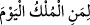

kime yaraşır? O’nun padişahlığı asker ve ordu ile değildir. Dünya padişahları ülke,
halk, nimet, süvari, asker ve saray ile iftihar ederler. Allah’ınki bunun aksinedir. O
(celle celâlühu) kâinât adeti için niyazsızlık ateşi yakar ve âlemi “hebâen mensûr” eder.
Kahr kılıcını feleklerin üzerine vurur ve “__WORD__ “Bugün hükümranlık kimindir?”
diye nidâ eder. Bu hitaba O’ndan gayrı cevap vermeye kimin cesareti olabilir?
Ey miskin; din ulularının Allah’ın keremine sığındığı kıyâmet gününde bilemiyorum
seni bu pis sîne ve bozuk amelle nereye oturturlar? Yükünü nereye koyarlar? Ey miskin!
Eğer hasta isen feryâd et. Eğer içinde ateş varsa dumanın nerede? Eğer tüccâr isen,
yıllar geçti kazancın nerede?
Bir elbise altında yüz binlerce Firavun varsa Mûsâ’nın sarığı ve Hârûn’un nâlininden
sana ne fayda?
“Bugün hükümranlık kimindir...” sözünün, o gün itibariyle görünen durumun delâlet
ettiği şeyi yâni “bütün sebeplerin yok olması ve hiçbir aracının kalmaması” durumunu
anlatıyor olması da câizdir. Çünkü “sebepler olmasa (sadece Müsebbib: sebepleri
yaratan) olsaydı şayet, hiç kimse şüpheye düşmezdi elbet!” Durumun (zâhiri böyle,
ancak) hakikatine gelince, o, mezkûr hükmü zaten vurgulayıp durmaktadır.
Hem soranın hem de cevap verenin Allah Teâlâ olduğu da söylenmiştir. Bu, bütün
yaratıkların fenâ bulmasından sonradır. Bu durumda, sözün başlangıcı Allah’tan olur.
Burada şöyle bir latîfe vardır: Fâtiha sûresinin yarısı Allah’a övgü, yarısı da kulun
duâsıdır. Birisi duâ ettiği zaman diğerine düşen: “Âmîn” demektir. Mesela siz “vele’d-
dâllîn” dediniz mi, O, bir nevi şöyle demiş oluyor: “Benim «Âmîn» demem gerekiyor.
Ancak ey kulum sen benim nâibim ol da benim yerime «Âmîn» de. Kıyamet günü gelip
çattığında ve ben «Bugün hükümranlık kimindir?» diye sorduğumda, senin, kabirde
olmana rağmen, “Kahhâr olan tek Allah’ındır”demen gerektiği halde bu sefer de ben
senin yerine cevap verip: “Kahhâr olan tek Allah’ındır” derim.”
İbn Atâ’ der ki: Câhillerin kötü tabiatları ve yetersiz mârifetleri olmasaydı, Allah
“Bugün hükümranlık kimindir?” şeklinde bir soru sormazdı, çünkü hükümranlık ezelî ve
ebedî olarak O’nundur. Gerçek mânâda hükümran ve sahip olan O’dur. Câhiller O’nun
hakkını bilemeyip marifetullahtan uzak bulundukları ve bunu gerçek mânâsıyla ancak
âhirette görebildikleri içindir ki içinde bulundukları o mecburiyet kendilerini: “Kahhâr
olan tek Allah’ındır”demek zorunda bırakmıştır.
“Vâhid,” kendisiyle birlikte hiçbir sayının bulunmadığı şey; “Kahhâr” ise, bütün
varlıkları isteyerek ya da istemeyerek kulluklarını ikrâr edecek şekilde âciz bırakan
varlık demektir.
Şeyhim ve senedim hazretleri -Allah ruhunu rahatlatsın-, bu ifadeyle ilgili olarak
şöyle demişti: “Kahhâr olan tek Allah’ındır” ifadesinde çok güzel bir sıralama vardır.
Çünkü Zat-ı Ahadiyet, vahdeti sebebiyle kesreti bertaraf ederken kahrı sebebiyle de
izleri bertaraf eder ve böylece Allah’tan başka hiçbir şey bâki kalmaz.
et-Te’vîlâtü’n-Necmiyye’de şöyle der: Hani o fenâ bularak kendi varlıklarından
çıkacakları gün.. O zaman, onların varlıklarından hiçbir şey Allah’a gizli kalmaz: O